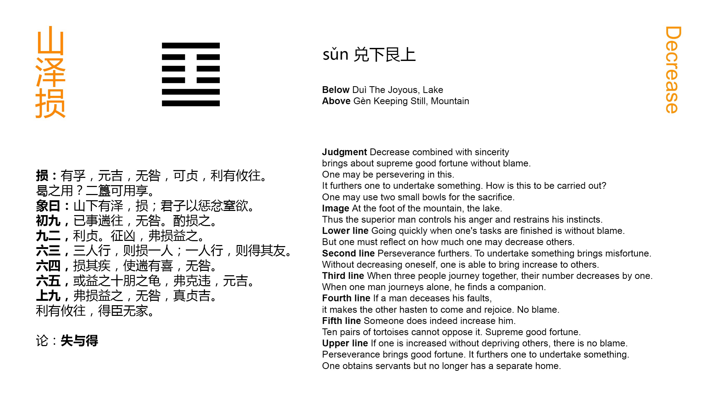

Chinese: 损 ䷨ sǔn

In (what is denoted by) Sǔn ䷨, if there be sincerity (in him who employs it), there will be great good fortune: -- freedom from error; firmness and correctness that can be maintained; and advantage in every movement that shall be made. In what shall this (sincerity in the exercise of Sǔn ䷨) be employed? (Even) in sacrifice two baskets of grain, (though there be nothing else), may be presented.
1. The first NINE, undivided, shows its subject suspending his own affairs, and hurrying away (to help the subject of the fourth line). He will commit no error, but let him consider how far he should contribute of what is his (for the other).
䷨ changing to ䷃
Matching Line 1 in Adjacent Hexagram: ䷩
2. The second NINE, undivided, shows that it will be advantageous for its subject to maintain a firm correctness, and that action on his part will be evil. He can give increase (to his correlate) without taking from himself.
䷨ changing to ䷚
Matching Line 2 in Adjacent Hexagram: ䷩
3. The third SIX, divided, shows how of three men walking together, the number is diminished by one; and how one, walking, finds his friend.
䷨ changing to ䷙
Matching Line 3 in Adjacent Hexagram: ䷩
4. The fourth SIX, divided, shows its subject diminishing the ailment under which he labours by making (the subject of the first line) hasten (to his help), and make him glad. There will be no error.
䷨ changing to ䷥
Matching Line 4 in Adjacent Hexagram: ䷩
5. The fifth SIX, divided, shows parties adding to (the stores of) its subject ten pairs of tortoise shells, and accepting no refusal. There will be great good fortune.
䷨ changing to ䷼
Matching Line 5 in Adjacent Hexagram: ䷩
6. The topmost NINE, undivided, shows its subject giving increase to others without taking from himself. There will be no error. With firm correctness there will be good fortune. There will be advantage in every movement that shall be made. He will find ministers more than can be counted by their clans.
䷨ changing to ䷒
Matching Line 6 in Adjacent Hexagram: ䷩
The interpretation of this hexagram is encompassed with great difficulties. Sǔn ䷨ is the symbol for the idea of diminishing or diminution; and what is said in Appendix I has made it to be accepted as teaching the duty of the subject to take of what is his and contribute to his ruler, or the expenses of the government under which he lives; in other words, readily and cheerfully to pay his taxes. P. Regis says, Sǔn ䷨ seu (vectigalis causa) minuere . . . est valde utile;' and Canon McClatchie in translating Appendix I has: -- 'Diminishing (by taxation for instance) …. is very lucky.' Possibly, king Wén may have seen in the figures the subject of taxation; but the symbolism of his son takes a much wider range. My own reading of the figure and Text comes near to the view of Guǎn Zǐ, that 'every diminution and repression of what we have in excess to bring it into accordance with right and reason is comprehended under Sǔn ䷨.'
Let there be sincerity in doing this, and it will lead to the happiest results. It will lead to great success in great things; and if the correction, or it may be a contribution towards it, appear to be very small, yet it will be accepted; -- as in the most solemn religious service. This is substantially the view of the hexagram approved by the Kāng Xī editors.
Line 1 is strong, and its correlate in 4 is weak. Its subject will wish to help the subject of 4; but will not leave anything of his own undone in (loin. so. Nor will he diminish of his own for the other without due deliberation.
Line 2 is strong, and in the central place. But it is in the place of a weak line, and its subject should maintain his position without moving to help his correlate in 5. Maintaining his own firm correctness is the best way to help him.
Paragraph 3 is to my mind full of obscurity. Zhū Xī, adopting the view in Appendix I, says that the lower trigram was originally Qián ☰, three undivided lines, like 'three men walking together,' p. 149 and that the third line, taken away and made to be the topmost line, or the third, in what was originally Kūn ☷, three divided lines, was 'the putting away of one man;' and that then the change of place by 3 and 6, while they continued their proper correlation, was, one going away, and finding his friend. I cannot lay hold of any thread of reason in this.
Line 4 is weak, and in an even place; like an individual ailing and unable to perform his proper work. But the correlate in 1 is strong; and is made to hasten to its relief. The 'joy' of the line shows the desire of its subject to do his part in the work of the hexagram.
Line 5 is the seat of the ruler, who is here humble, and welcomes the assistance of his correlate, the subject of 2. He is a ruler whom all his subjects of ability will rejoice to serve in every possible way; and the result will be great good fortune.
Line 6 has been changed from a weak into a strong line from line 3; has received therefore the greatest increase, and will carry out the idea of the hexagram in the highest degree and style. But he can give increase to others without diminishing his own resources, and of course the benefit he will confer will be incalculable. Ministers will come to serve him; and not one from each clan merely, but many. Such is the substance of what is said on this last paragraph. I confess that I only discern the meaning darkly.